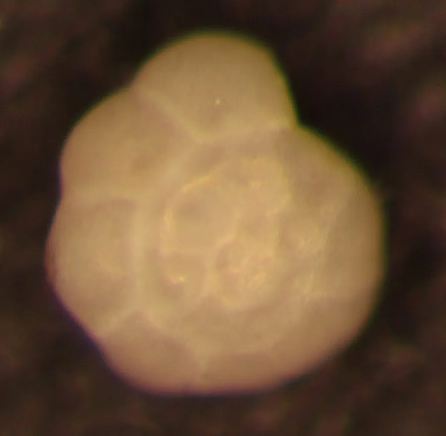

其他无脊椎动物 · 动物界
有孔虫 Ammonia tepida

壳径不足一毫米、带多个小室的钙质壳单细胞生物，栖息于潮间带泥沙中，是判断水质与古环境的指示生物。
- 分类
- 门有孔虫门纲轮虫纲目轮虫目科轮虫科属氨盘虫属
- 栖息环境
- 潮间带、河口与浅海的泥沙底，营底栖生活
- 地理分布
- 世界各地的潮间带与浅海泥沙底，中国沿海滩涂与养殖塘常见
- 保护级别
- 无保护问题；为水质与古环境研究的指示生物
物种志
有孔虫是一类单细胞的原生生物，氨盘虫的壳径通常只有零点五毫米左右，壳由碳酸钙构成，呈螺旋状卷曲，分为若干个逐渐增大的小室，小室之间有隔板，壳面密布细小的孔，伪足从孔中伸出，有孔虫之名由此而来。壳质半透明，呈灰白至淡黄，在显微镜下像一枚精致的微型螺壳。
它分布于世界各地的潮间带、河口和浅海泥沙底，在中国沿海的滩涂和养殖池塘中很常见，营底栖生活，靠伪足在泥沙颗粒之间移动，捕食细菌、藻类和有机碎屑。它耐受低氧和有机污染的能力较强，在污染严重的沉积物中往往成为优势种，因此被广泛用作水质和生态健康监测的指示生物；它的壳还能保存在沉积物中，为古气候和海平面变化研究提供材料。它通过分裂进行无性生殖，也可进行有性生殖。它尚无保护级别，是微体古生物学和生态学研究的重要对象。
形态与习性
- 壳径通常约零点五毫米
- 壳质碳酸钙质，螺旋卷曲，分为多个小室
- 伪足从壳面孔隙伸出，用于移动与捕食
- 栖息潮间带、河口与浅海泥沙底
- 食性捕食细菌、藻类与有机碎屑
- 指示作用耐低氧与有机污染，可作水质监测指标
趣味知识
- 它只有一个细胞，却给自己造了一座带多个小室的钙质房子。
- 它的壳能埋在沉积物里几十年上百年，帮科学家还原古环境。
- 在污染重的滩涂上它反而更多，因此成了水质变差的信号。